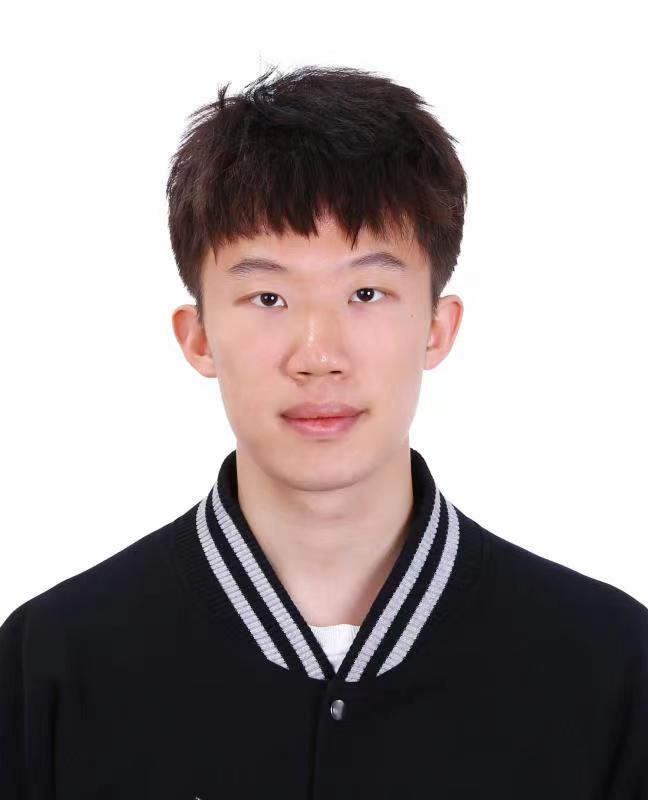

|  | Shuo YIN (尹硕)Ph.D. Student
Department of Computer Science and Engineering
|
Biography
I am a first-year Ph.D. Student at the Department of Computer Science and Engineering, the Chinese University of Hong Kong (CUHK),
under the supervision of Prof. Bei Yu and Prof. Tsung-Yi Ho (co-advisor) since Fall 2022. Prior to that, I obtained my B.Eng. degree from Shenyuan Honors College, Beihang University under the supervision of Prof. Wei XING in 2022.
Besides research, I love playing tabletop game and CSGO in my spare time.
Recent News
Sep/2022: Congratulation! Our work on yield optimization is published on IEEE/ACM Asia and South Pacific Design Automation Conferenc (ASP-DAC)!
Jul/2022: One paper has submitted to IEEE/ACM Asia and South Pacific Design Automation Conferenc (ASP-DAC). Waiting for some good news!
Jun/2022: I graduate from Beihang Univeristy! Thanks to all the friends I met in Beihang University during my undergraduate time!
May/2022: One paper has submitted to IEEE/ACM International Conference on Computer-Aided Design (ICCAD). Waiting for some good news!
Feb/2022: Congratulation! Our work on yield optimization is published on IEEE/ACM Design Automation Conference (DAC)!
Research Interest
Design Space Exploration
Placement & Routing
GPU Parallelization for EDA
Publication
[C2] Shuo Yin, GuoHao Dai, Wei W. Xing, “High Dimensional Yield Estimation using Shrinkage Deep Features and Maximization of Integral Entropy Reduction”, IEEE/ACM Asian and South Pacific Design Automation Conference (ASP-DAC), Tokyo Odaiba Miraikan, Japan, Jan. 16-19, 2023. (code)
[C1] Shuo Yin, Xiang Jin, Linxu Shi, Kang Wang, Wei W. Xing, “Efficient Bayesian Yield Analysis and Optimization with Active Learning”, ACM/IEEE Design Automation Conference (DAC), San Francisco, CA, Jul. 10-14, 2022.
Education
Ph.D. The Chinese University of Hong Kong (CUHK), Aug/2022 - Now
B.Eng. (Honor Degree), Beihang University (BUAA), Sep/2018 - Jun/2022
Selected Awards
| Full Postgraduate Studentship | The Chinese University of Hong Kong | 2022-2026 |
| Third Prize, Intergrated Circuit EDA Elite Challenge | Beihang University | 2022 |
| Meritorious Winner (With Yuxin WANG, Siqi WANG), MCM/ICM | Beihang University | 2021 |
| Outstanding Scholarship (10%) | Beihang University | 2021 |
| First Prize, National College Mathematics Competition | Beihang University | 2019 |
Experiences
Research Assistant, CANLab, Department of Electrical and Electronic Engineering
Jun/2021 - Sep/2021,
Topic: Application of Memristor
Research Assistant, supervised by Prof. XiaoChen GUO
Dec/2020 - Dec/2021,
Topic: Accelerator for Sparse Matrix Multiplication
Skills
Languages: C/C++, Verilog, Python, Java, Chisel
Tools : Xilinx Vivado, PyTorch, LaTeX
Hobbies : Bamboo Flute, Drum, Frisbee